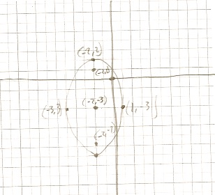

Source: Notes
Explanation:
This artifact demonstrates how to make conic models that fit given conditions.
I’m assuming that the center of this ellipse is (0, 0).
I know b^2 = 4 because the problem tells us what the minor axis length is.
Since the foci are 6 y-units apart, the point between them would be on y = 3, so c = 3.
Knowing \(b^2\) and c, I can solve for \(a^2\) using the pythagorean relation for ellipses \(a^2 = b^2 + c^2\)
Artifact:
Find an equation of the ellipse with foci \((0, \pm3)\) whose minor axis has length 4.
Source: Group Quiz 8.2 & 8.3
Group Work
This problem was from a group quiz. We initially did this problem independently, but we got different answers, so we worked together to figure out which one was correct.
Explanation:
The first thing I noticed from the equation was that it had addition, so it had to be ellipsoidal.
I noticed that the value with the highest denominator had \(y^2\) in the numerator, so I knew it was an ellipse opening vertically.
This also told me that \(a^2 = 25 \text{ , } b^2 = 9\), and that I could rely on the formula \({(y-k)^2 \over a^2} + {(x-h)^2 \over b^2} = 1\).
I knew the center was \((-2 ,-5)\) by comparing equation with the formula.
I knew that the pythagorean relation for an ellipsoid is \(c^2 = a^2 - b^2\), so I used my a and b values solve for the distance from the center to the foci (4)
I knew my foci had to be at \((h, k\pm c) = (-2, -3\pm 4)\).
I also knew that my end point had to be at \((h\pm b, k) = (-2\pm 3, -3)\) because \(b = \sqrt{b^2} = \sqrt{9} = 3\).
From there, all I had to do was graph.
Artifact:
Graph \({(x + 2 )^2 \over 9} + {(y + 3)^2 \over 25} = 1\)
Source: Section 8.1 Example 6/my own little twist
Explanation:
This artifact demonstrates the applications of conic sections.
This artifact demonstrates how to graph conic sections from equations.
To solve this problem, I went off the assumption that the vertex of the parabolic reflector was at (0,0).
This assumption allowed me to use the formula \(x^2 = 4py\)
Since the vertex was at (0,0), the distance accross the reflector (6 feet) must divided symmetrically by the y-axis.
Since parabolas are always perfectly symmetric, the distance from the center to the endpoints of the parabolic reflector must be \(1 \over 2\) of the distance of the width of the parabolic reflector.
I also knew from the problem that the vertical distance from the center is 2.
Knowing these things, I was able to deduce that the endpoints of the parabolic reflector had to be at \((\pm3,2)\).
With that coordinate, all I had to do was plug into the parabolic formula, and solve for p (because p is the distance from the center to the foci).
Artifact:
At his weekend job as a secret agent in the CIA, Luis uses a parabolic reflector that he wears on his head with a microphone at the reflector’s focus to capture the conversations of russian spies.
If the parabolic reflector is 6 feet across and 2 feet deep, where should the microphone be placed?
Center = \((0, 0)\)
The microphone should be placed \(\approx 1.125\) feet from the vertex of the parabolic reflector.
Source: Group Quiz 8.2 & 8.3
Group Work
This problem was from a group quiz. The three of us worked on this problem together.
Explanation:
This artifact demonstrates how to algebraically manipulate conic equations into standard form.
The first thing I did was organizational. I put the x values next to the other x values and the y values next to the other y values.
Then I pulled a common factor from the x’s (25) and a common factor from the y’s (16).
The result of this was two quadratic equations which I then factored using completing the square.
Once I had completed the square, I divided both sides by 400 to make the equation equal to 1 (because I knew it is a conic).
Then I divided the remaining common factors (25 and 16) by both sides to complete the hyperbolic equation.
Artifact:
Use completing the square and find the equation for \(25y^2 - 16x^2 - 100y - 224x - 1084 = 0\)
Source: Group Quiz 8.2 & 8.3
Explanation:
This artifact demonstrates parabolas, ellipses and hyperbolas.
The transverse axis is \(2a \text{, so } 2a = 6\).
The distance between the center and the foci (c) is the same as the distance between the two foci (in the x) divided by 2, which is 4.
I used the pythagorean relation for a hyperbola, which is \(a^2 + b^2 = c^2\), to solve for \(b^2\).
I took half the distance between the two foci to get the x value of my center (-1).
I knew the y value of my center was 4, because the center is on the same level as the two given foci.
Now I could just plug into the hyperbolic formula to get the standard form of this hyperbola.
\({(x-h)^2 \over a^2} - {(y-k)^2 \over b^2} = 1\)
Artifact:
Find the equation for a hyperbola with foci at \((3, 4)\) and at \((-5, 4)\) and a transverse axis length of 6.